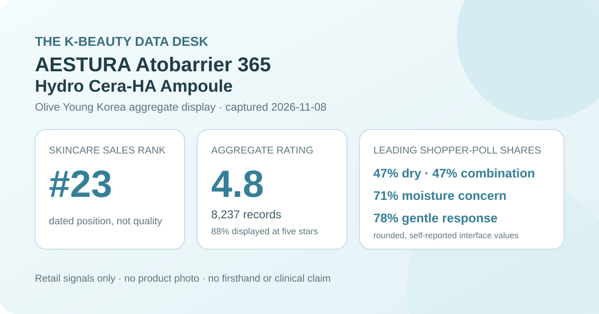
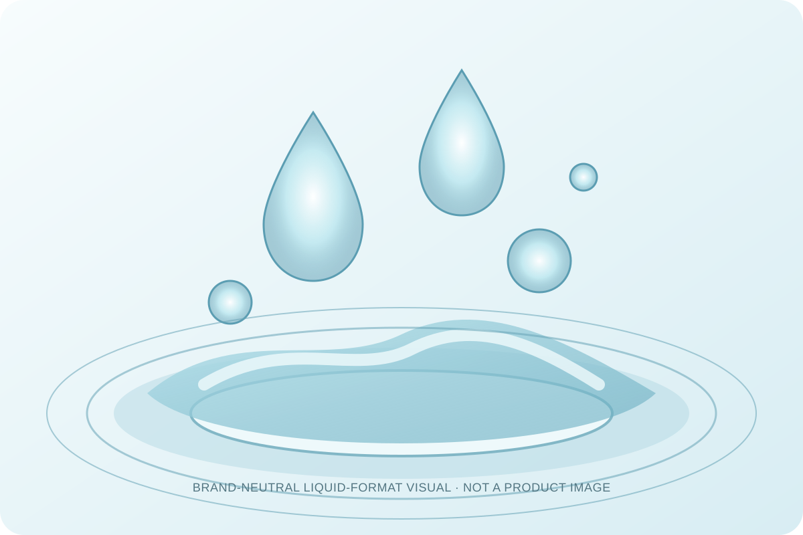

Data captured November 8, 2026. This analysis uses only the retailer's displayed product title, ranking position, aggregate rating, star distribution, and shopper polls. It does not copy or translate individual review text, reviewer names, or photos, and it makes no claim of firsthand use.

The short version: AESTURA Atobarrier 365 Hydro Cera-HA Ampoule appeared at number 23 in the captured skincare sales ranking. Its product header and official review view agreed on 4.8 out of 5 from 8,237 records. Five-star selections made up 88% of the displayed distribution. Dry and combination skin tied at 47% in the skin-type poll, moisture led the concern panel at 71%, and 78% selected the gentle response. These are retailer signals, not proof of increased hydration, barrier repair, clinical efficacy, or universal tolerance.
The displayed average was 4.8 stars. Olive Young showed 8,237 review records in the product header, and its official review view repeated the same score and total. That agreement matters because it avoids pairing a headline number from one listing state with detailed percentages from another refresh.
The detailed view displayed these rounded star shares:
The displayed rows total 99%, a normal consequence of whole-number rounding. The defensible descriptive reading is that the favorable end dominates this retailer pool: 88% appeared at five stars and 9% at four stars. That combined 97% is a strong satisfaction signal for the listing, but it is not a controlled comparison and cannot identify which part of the formula, routine, refill value, promotion, or buyer expectation produced the ratings.
An 8,237-record base reduces the influence of a single score, yet it can still combine different purchase dates, package configurations, climates, routines, sensitivities, application amounts, and expectations. The interface also warns that reviews associated with the same contents may cover different volumes, bundles, gifts, or packages. The average therefore should not be read as a lab result for only the current bottle-and-refill plan.
The skin-type panel displayed 47% dry, 47% combination, and 6% oily. Those rounded shares total 100%. The tie is more informative than forcing one group into a “best for” label: dry and combination respondents were equally represented in the displayed answers, while oily respondents formed a smaller share.
This is representation, not a compatibility score. The interface did not disclose the poll denominator, whether every reviewer answered, how people classified their skin, or which other products they used. A 47% share does not prove that the ampoule works equally well for dry and combination skin, and the 6% oily share does not justify a warning against oily skin.
The concern panel showed 71% moisture, 28% soothing, and 1% wrinkle or brightening. Those rows total 100%. Moisture clearly led the displayed answers, but it remains a shopper-poll label rather than an instrument reading.
No corneometer result, transepidermal-water-loss measurement, standardized photography, comparator, defined application amount, or controlled treatment period was captured. The 71% response cannot establish the size or duration of any hydration change. Likewise, the 28% soothing response does not measure redness or inflammation, and the 1% wrinkle or brightening response does not prove either endpoint.
The irritation panel displayed 78% gentle, 21% ordinary, and 1% felt irritation. The rows total 100%. A clear majority chose the favorable label, but more than one in five selected ordinary and a felt-irritation row remained present. Reporting all three avoids turning a crowd pattern into a guarantee.
The source did not provide a patch-test protocol, allergy screening, severity scale, exposure duration, or medical evaluation. People with known allergies, active skin conditions, a damaged barrier, or a history of reactions should inspect the current regional ingredient list and seek appropriate professional guidance rather than rely on a retailer aggregate.

The Korean retailer title calls this item an ampoule, while the brand's international naming uses Hydro Cera-HA Serum. Both labels place it in the leave-on liquid treatment step between toner and moisturizer. That category can help a shopper understand routine order, but it does not verify exact viscosity, slip, tack, absorption time, scent, residue, pilling, or compatibility with sunscreen and makeup.
I did not open, dispense, apply, or layer the product. The local illustration above deliberately avoids reproducing the bottle or product fluid. It supplies only a generic visual cue for a translucent leave-on liquid. Actual sensory behavior depends on the current formula, amount, application method, temperature, humidity, preceding products, and later routine steps.
“Cera-HA” and “deep moisture” are prominent product-family language. The captured review interface did not establish which ceramide or hyaluronic-acid forms were present in the current Korean formula, their concentrations, their delivered dose, or their independent contribution to the ratings. A product name cannot substitute for a complete current ingredient list or quantitative formula disclosure.
The same caution applies to barrier language. A high average and a moisture-led poll do not show that the product repaired a barrier, reduced transepidermal water loss, treated eczema, or improved a medical condition. Those conclusions would require a defined protocol, appropriate controls, measurements, and a clear time frame. Ingredient-focused shoppers should confirm the current package or official regional label rather than infer composition from the name.
Rank 23 describes one moment in Olive Young Korea's skincare sales list. It is not a quality rank and does not mean this was objectively the twenty-third-best skincare product. Promotion placement, discounts, gifts, stock, advertising, seasonality, and recent demand can all affect the order.
The captured listing showed a 30 ml ampoule with a 30 ml refill, a ₩47,500 reference price, and a ₩33,250 displayed promotional price. These are dated context, not current buying advice. Confirm the selected option, total volume, stock, formula, coupon conditions, seller, returns, and checkout total on the live listing.
AESTURA Atobarrier 365 Hydro Cera-HA Ampoule was the first valid unpublished product after 22 higher-ranked existing product families or promotional configurations were skipped. The listing passed the consistency check: ranking and detail titles agreed, and both review surfaces showed 4.8 stars from 8,237 records.
The aggregate is favorable: 97% appeared in the four- and five-star rows, dry and combination skin tied for the largest representation, moisture led the concern panel, and gentle led the irritation panel. The responsible conclusion stops there. These figures support the listing's popularity and generally favorable retailer feedback; they do not prove deep hydration, barrier repair, clinical soothing, anti-wrinkle or brightening effects, universal gentleness, or superiority over another serum.
Both captured review surfaces showed 4.8 out of 5 from 8,237 records, with 88% displayed at five stars.
Dry and combination skin were tied at 47% in the displayed poll. That describes who answered and does not prove better performance for either group.
No. The 71% response is a shopper-poll label without an objective hydration or barrier endpoint.
No. The displayed irritation panel also included 21% ordinary and 1% felt irritation, and no aggregate can predict an individual's tolerance.
No. This is a dated analysis of retailer-displayed aggregates. The generic liquid visual is not a product image or evidence of use.
Source: Olive Young Korea product page (captured November 8, 2026). The live listing, option, price, stock, rating, and review totals may change after capture.
← Back to all reviews · Review-volume ranking · Skin-poll representation · Methodology